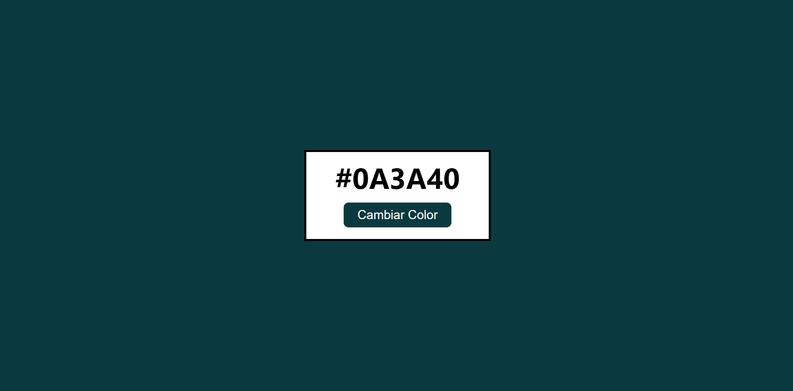
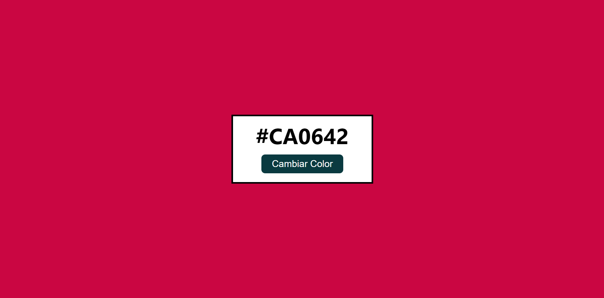

Colores Hex Aleatorios
 En este proyecto, aprendí a obtener y manipular elementos del DOM.
También utilicé números aleatorios para crear nuevos colores y aplicarlos a los elementos HTML correspondientes.
Seccion 2

Seccion 3
Este es un parrafo de la seccion 3
Seccion 3
Este es un parrafo de la seccion 3
Seccion 3
Este es un parrafo de la seccion 3